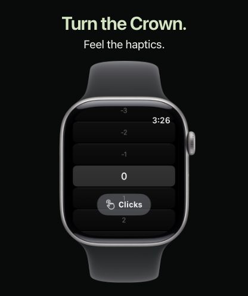
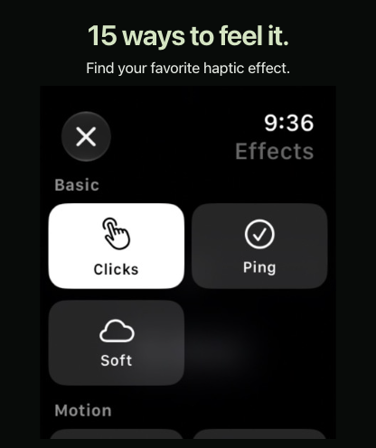
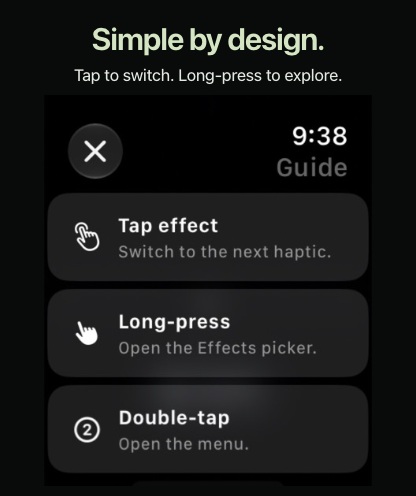
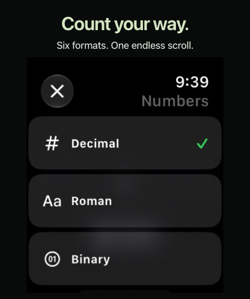
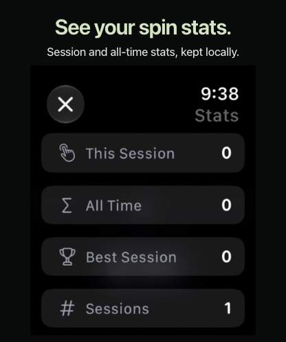
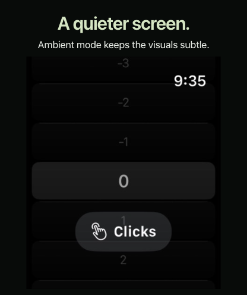

1.0.1 · English (U.S.) · Apple Watch · 416 × 496 px · upload in this order






The first image uses official Apple Watch hardware artwork. Feature screens stay large. Captures are complete and proportionate; headlines stay outside the app UI. Read the material notes.